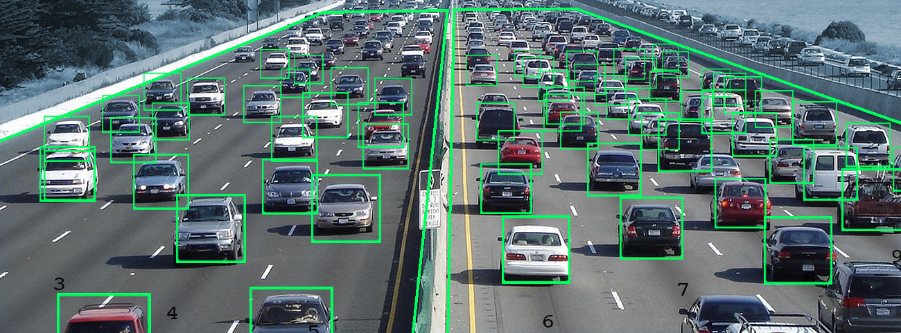

Matching Low resolution faces from NIR spectrum (bottom row) with High Resolution faces from visible (top row) taken from the CASIA NIR-VIS 2.0 database
Areas of Research
Video Surveillance for face recognition
Traffic Surveillance
Cross Modal retrieval
The increasing use of surveillance cameras for addressing security concerns has led to increased demand for robust face (object) recognition systems. The images captured by the surveillance cameras usually have poor resolution, uncontrolled pose and illumination conditions which makes the task of recognizing these faces extremely challenging.
Vehicular transportation has been an integral part of human life since time immemorial.New models are released by the day and with increasingly smaller difference in the size and utility of the vehicle. This makes image based classification of vehicles a major challenge in addressing ssues related to Intelligent Traffic Management such as vehicular density estimation, utility specific lane maintenance,load estimation, etc.

Classification of vehicles in urban traffic scenes
In recent years, cross-modal retrieval has drawn much attention due to the rapid growth of multimodal data. It takes one type of data as the query to retrieve relevant data of another type. For example, a user can use a text to retrieve relevant pictures or videos. Since the query and its retrieved results can be of different modalities, how to measure the content similarity between different modalities of data remains a challenge.

Image- to- text Retrieval